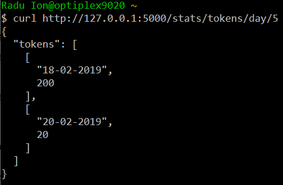

The TEPROLIN Web Service (WS) was developed and is maintained in the ReTeRom project. The backend is the TEPROLIN text preprocessing platform that incorporates several NLP applications for which it provides a unified access interface as a Python 3 object.
TEPROLIN currently offers 15 text preprocessing operations for Romanian, 13 of which are described in (Ion, 2018). These are:
The GET queries will request for configuration information. Assuming that the WS is running on http://127.0.0.1:5000,
curl http://127.0.0.1:5000/operations
will return a JSON object with the list of 15 operations mentioned above:
A GET request with one of the TEPROLIN's operations, e.g.
curl http://127.0.0.1:5000/apps/pos-tagging
will return the JSON object with the list of the NLP apps that can perform it:
The first NLP app is the default app to execute the operation. In the example above, pos-tagging is executed with nlp-cube-adobe.
Here is the complete list of NLP apps that TEPROLIN currently incorporates, for each operation:
In order to annotate text, you will send POST requests to the /process URL. TEPROLIN is a REST WS, meaning that there is not any saving happening between requests. If you want to use a different NLP app for a given operation, you should send the configuration option along with the text to be processed. For a full list of what operations can be executed with what NLP apps, see the previous section.
The POST request is typed with the application/x-www-form-urlencoded MIME type. The body of the request must contain only the following key=value pairs, concatenated with the & character:
text=text to be annotated here...
<operation>=<NLP app> (e.g. pos-tagging=ttl-icia)exec=<operation>,<operation>,...
If exec is present, then the requested operations are performed in the proper order (the client need not bother with the order). TEPROLIN will infer the order of function calls and the modules to run such that the requested annotations are returned to the client. If exec is not present, then the full processing chain is executed (all 15 operations).
If any configuration option is present, then the specified operation(s) will be performed with the requested NLP app(s) (e.g. pos-tagging is performed with the ttl-icia NLP app).
Finally, text is the only key that is required and which contains the text to be processed.
TEPROLIN WS will respond with a JSON object containing two keys:
For example, the output for the command
curl http://127.0.0.1:5000/process -d "text=Diabetul zaharat se remarca prin valori crescute ale concentratiei glucozei in sange." -d "exec=biomedical-named-entity-recognition"
is the following:
The TEPROLIN platform can offer statistics about the following types of events:
In order to get frequency information of the above-mentioned events, you will send GET requests to the /stats URL prefix. To obtain the full URL, you must append a statistics type (one of the tokens or requests), a time period (one of the year, month or day) and a size of the history to retrieve, an integer.
For example, to get a break-down of the number of tokens processed in the past 5 days (including the present day), you would query like this:
curl http://127.0.0.1:5000/stats/tokens/day/5
In order to get the number of requests for the current month, send this query:
curl http://127.0.0.1:5000/stats/requests/month/1
TEPROLIN will respond with a JSON object that contains the list of counts for the specified statistics type. For the first request, the response looks like this:
Tiberiu Boroș, Ștefan Daniel Dumitrescu and Ruxandra Burtica. (2018). NLP-Cube: End-to-End Raw Text Processing With Neural Networks. In Proceedings of the CoNLL 2018 Shared Task: Multilingual Parsing from Raw Text to Universal Dependencies, Association for Computational Linguistics. pp. 171--179. October 2018
Tiberiu Boroș, Ștefan Daniel Dumitrescu and Vasile Păiș. (2018). Tools and resources for Romanian text-to-speech and speech-to-text applications. arXiv:1802.05583v1 [cs.CL]
Radu Ion. (2018). TEPROLIN: An Extensible, Online Text Preprocessing Platform for Romanian. In Proceedings of the International Conference on Linguistic Resources and Tools for Processing Romanian Language (ConsILR 2018), November 22-23, 2018, Iași, România.
Radu Ion, Badea V. G., Cioroiu G., Barbu Mititelu V., Irimia E., Mitrofan M. and Tufiș D. (2020). A Dialog Manager for Micro-Worlds. Studies in Informatics and Control, 29(4) 401--410, December 2020. ISSN: 1220-1766
Milan Straka, Jan Hajič and Jana Straková. (2016). UD-Pipe: trainable pipeline for processing CoNLL-Ufiles performing tokenization, morphological analysis, POS tagging and parsing. In Proceedings of the 10th International Conference on Language Resources and Evaluation (LREC 2016). European Language Resources Association, Portorož, Slovenia.